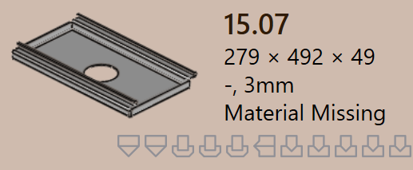
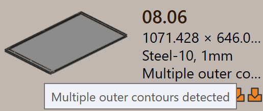

Stav dielu
Keď je diel importovaný do TruSmartCAM, príslušná technológia spracovania plechu je automaticky aplikovaná na diel. Ako súčasť tohto procesu TruSmartCAM vykonáva
Stav dielu sa zobrazuje priamo na dlaždici dielu pod názvom dielu, čo indikuje aktuálny stav validácie dielu.
Typy stavov dielov popisujú rôzne podmienky, v ktorých sa diel môže nachádzať ako výsledok kontrol validácie na úrovni dielu. Tieto stavy indikujú problémy týkajúce sa dizajnu dielu, materiálu alebo geometrie a musia byť vyriešené pred tým, ako môže pokračovať obrábanie.
Chyby dielu
Chyba CAD (Computer-Aided Design) nastáva, keď je problém v dizajne alebo geometrii dielu, ako napríklad otvorené kontúry, chýbajúca geometria alebo nepriradený materiál. Tieto chyby pochádzajú z CAD modelu a bránia ďalšiemu spracovaniu dielu.
-
Ohyb nie je možný : TruSmartCAM automaticky sa pokúša nájsť platnú metódu ohýbania pre diel. Ak nedokáže nájsť žiadne vhodné riešenie ohybu, diel je označený ako bend infeasible.
-
Cut infeasible : Ak sú varovania ohybu ignorované, TruSmartCAM sa potom pokúsi nájsť metódu rezania. Ak nie je nájdené žiadne platné riešenie rezania, diel je označený ako cut infeasible.


Chyby materiálu
-
Materiál neexistuje : Hrúbka dielu je načítaná z CAD modelu a porovnaná s materiálmi v databáze surových materiálov TruSmartCAM. Ak nie je nájdený žiadny zodpovedajúci materiál, diel je označený chybou Materiál neexistuje.
-
Materiál nie je priradený : Ak CAD model nemá pole priradenia materiálu alebo ak je pole prázdne, TruSmartCAM nemôže priradiť materiál. V tomto prípade je diel označený chybou Materiál nie je priradený.

Chyby geometrie
-
Zistili sa otvorené geometrie : CAD súbor má jeden alebo viac otvorených (nekompletných) tvarov, čo bráni správnemu obrábaniu.
-
Zistených viacero vonkajších gemetrií : CAD súbor má viac ako jednu vonkajšiu uzavretú slučku, čo vytvára nejasnosť počas spracovania.
-
Nascent error : Keď je diel načítaný z tabuľky (CSV alebo XLSX), ale skutočný CAD súbor chýba, je označený ako nascent diel.
-
Chýbajúca geometria : CAD model nemá platnú geometriu alebo je geometria nečitateľná, čím je nepoužiteľný na obrábanie.
